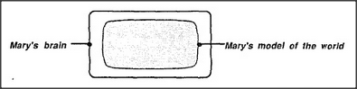
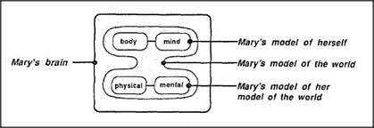

Now let's look at Mary's model of the world. (By world I mean the universe, not just the planet Earth.) This is simply all the structures in Mary's head that Mary's agencies can use to answer questions about things in the world.
But what if we were to ask Mary a question not about any particular object, but one like What sort of thing is the world itself? That would put Mary in a curious predicament. She cannot answer this by using her world model, because each part of that model is designed only to answer questions about particular things. The trouble is that the world itself is not a particular thing inside the world.
One way to deal with this (and a method that, surely, many children use) is adding to the model of the world an additional object — that represents the world itself. Then, since any object must have properties, the child might then assign to this the features, say, of an extremely large ball. Naturally this will lead to trouble should that child persist in asking ordinary questions about this extraordinary object — such as What keeps the universe in place? or What's outside the universe? — for these then lead to strange and inconsistent images. Eventually we learn some ways to deal with this — for example, by learning which questions to suppress. But as in the case of a perfect point, we may always feel uncomfortable with the thought of a thing that is unimaginably large in size, but has no shape at all.
When you get right down to it, you can never really describe any worldly thing, either — that is, in any absolute sense. Whatever you purport to say about a thing, you're only expressing your own beliefs. Yet even that gloomy thought suggests an insight. Even if our models of the world cannot yield good answers about the world as a whole, and even though their other answers are frequently wrong, they can tell us something about ourselves. We can regard what we learn about our models of the world as constituting our models of our models of the world.
